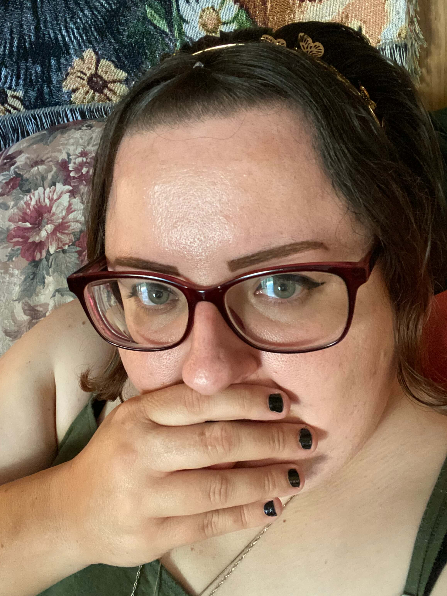

Julie Rice
Chino Valley, Arizona
Hello, I'm Julie/Rika!
I am an aspiring cartoonist from Arizona. I have a passion for art and cartoons, as well as good storytelling and relateable characters.

A little bit about me
Thanks for stopping by! My ultimate goal as a cartoonist is to bring more inclusivity to children’s media. I want children to be able to see people different from them and learn that differences are okay. Differences are what make us human.
Acceptance is a big part of my themes, and I want marginilized communities to feel seen and heard.